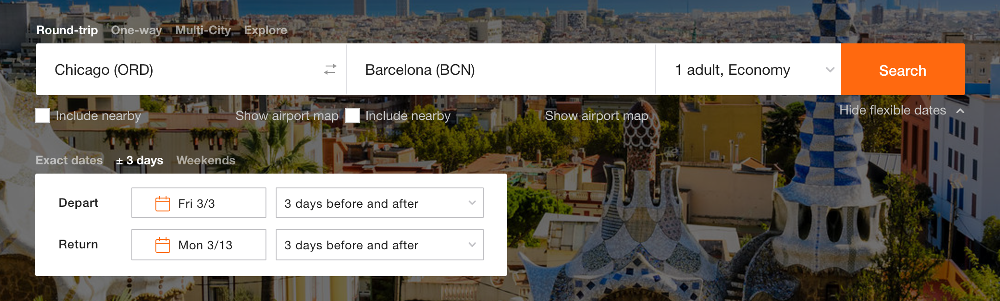
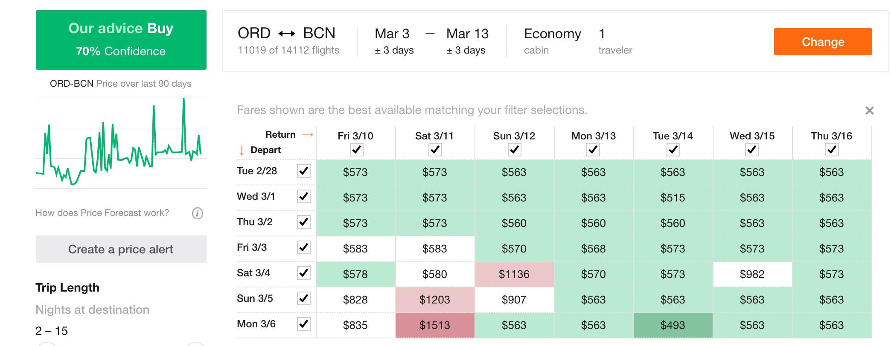
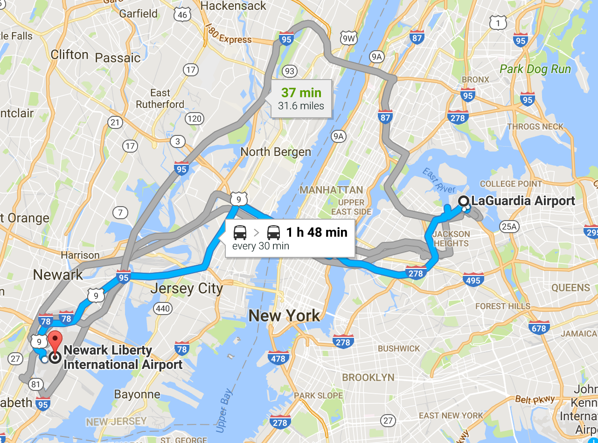

El costo de los boletos de avión es el gasto más grande del presupuesto, por ello los boletos los estuve monitoreando por varios días en diferentes páginas. En este post hablaré de dónde compré los boletos y por qué los compre de esta forma.
Una vez definido el Presupuesto y el Itenerario lo siguiente es hacer que el viaje suceda, para ello de lo más importante es comprar los boletos. En ocasiones la compra de boletos modifica tanto Presupuesto como Itenerario, por ello es imporante tener un plan y saber qué tan flexibles podemos ser con él.
La página que principalmente utilizo para comprar boletos de avión es kayak.com. Me parece buena página, fácil de usar y tiene la información de costos de muchas aerolíneas, entonces mi primer búsqueda siempre la hago en kayak.com
Una de las opciones que me gusta de kayak.com es que puedes seleccionar un intervalo de +-3 días, entonces puedes ver cuándo hay mejor precio en un rango de una semana, esto evita tener que buscar día por día.


De igual forma tiene opción para comparar contra otros sitios como: expedia.com, priceline.com, etc. Sin embargo estas opciones yo no las utilizo pues en mi experiencia kayak.com me ha dado mejores precios, pero no está de más comparar, al final mientras más información tengamos mejor decisión tomaremos.
Como pueden ver en el print-screen, hay boletos entre $500 y $600 dlls por persona, así que es cosa de revisar nuestro plan y ver cuándo nos va mejor llegar y regresarnos, qué horario nos conviene más, qué aerolínea preferimos y cuánto estamos dispuesto a destinar de nuestro presupuesto para definir estas preguntas.
kayak.com por lo general también te dice qué aerolinea, por tanto lo siguiente que hago es irme directamente a la aerolínea, en este caso united.com, y buscar los mismo vuelos. Con esto tengo dos comparativos:
a) kayak.com con su búsqueda general en días, horarios y aerolíneas.
b) united.com con el vuelo y día que quiero.
Si el precio es casi el mismo (no siempre es el caso), prefiero comprar el boleto a través de united.com, pues en caso de cualquier cosa es mejor lidear directamente con ellos que son quienes brindan el servicio que con un intermediario.
Después de revisar los vuelos y por tratarse de un vuelo USA-Europa, tanto en kayak.com como en united.com me dí cuenta que todos los vuelos tenían cuando menos una escala, y esta escala en la mayoría de los casos era en New York. Así que lo siguiente que hice fue buscar en ambas opciones, kayak.com y united.com, vuelos New York-Barcelona.
Evidentemente el costo fue mucho menor, en mi caso una diferencia aproximada de $200 dlls, claro esto implica que ahora yo debo encargarme de comprar boleto Chicago-New York, y asegurarme que los tiempos sean suficiente para tomar el siguiente vuelo.
Pues así fue, finalmente compré el boleto New York-Barcelona a través de united.com y Chicago-New York a través de spirit.com. Aquí el desglose del vuelo:
Chicago-New York redondo por spirit.com en $ 127.38 dlls
New York-Barcelona redondo por united.com en $ 376.66 dlls
Total por persona: $ 504.04 dlls
De ida llegamos a New York, LaGuardia y el vuelo a Barcelona sale por New Jersey, Liberty.
De regreso llegamos New Jersey, Liberty y el vuelo a Chicago sale por New York, LaGuardia

Como se puede apreciar la distancia en transporte público es aproximadamente de 2 horas, esto puede verse afectado por varias cosas, y por otro lado para vuelos internacionales es necesario llegar con al menos 3 horas de anticipación, así que me asegure de tener cuando menos 6 horas de diferencia entre ambos vuelos.
Al costo por persona hay que agregarle el costo del transporte entre aeropuertos por el cual pagaremos 28 dlls por persona, por viaje, a través de nycairporter. En caso de ir 3 o 4 personas el costo sería el mismo que si se usa Uber o Lift, donde el costo ronda los 80 - 100 dlls.
La opción más económica es usar transporte público 20 dlls por persona. Sin embargo nosotros prefirmos nycairporter pues es cómodo, tiene wifi y te llevan de aeropuerto a aeropuerto. Uber o Lift nos hubiera salido más caro, sin embargo de haber ido más personas seguro hubieramos tomado uno de ellos.
Así que el costo final de boleto + traslado entre aeropuertos:
504.04 + (28 * 2) = $560.04 dlls
Inicialmente tenía presupuestado gastar 600 dlls, así que pude bajar el costo 39.96 dlls por persona.
Definitivamente una opción era pagar más dinero y dejar que la aerolínea se encargará de mi traslado desde Chicago, sin embargo al momento de comprar los vuelos, no encontré un boleto que llegara a Barcelona el día y a la hora (temprano, para poder aproverchar el día) que yo quiero, por otro lado tampoco estaban las aerolíneas de mi interés. Así que en mi caso, yo le dí prioridad a llegar a la hora y día, en la aerolínea de mi agrado que ha pagar un poco más y evitar el traslado entre aeropuertos en New York. Esto va depender de cada persona y de a qué se le da más prioridad.
Como comentario adicional, al momento de comprar los boletos había varias aerolíneas de diferentes paises, sin embargo en mi experiencia cuando se trata de vuelos internacionales, en los cuales regreso a Estados Unidos, en mi caso que soy Mexicano viviendo en Chicago, las aerolíneas americanas han tenido mejor conocimiento del tema de migración, de qué papeles pedirte y verificar que todo este en orden, así que en mi caso si el costo no es de gran diferencia entonces prefiero utilizar una aerolínea americana.
Finalmente para complementar, spirit.com es una aerlínea de precios baratos, en sí no es la mejor experiencia pues sus espacios por pasajero son reducidos y pueden ser algo incómodos, además de que el costo solo es sobre el boleto, cualquier otra cosa tiene un costo, desde el agua que pides en el avión, hasta la maleta que documentas. Sin embargo para vuelos cortos 2 - 4 horas, es buena opción, pues siempre tiene mucho mejores tarifas que otras aerólineas, y hasta la fecha no he tenido problemas con ellos.
Nota: Dentro del costo presentado ya está incluida una maleta documentada.
“You’ve got to keep things flying.” - Keith Emerson